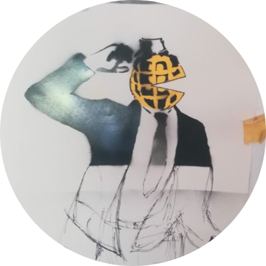

"The good things of prosperity are to be wished but the good things that belong to adversity are to be admired"
.I am a Junior Web Developer who is currently based in Cape Town, South Africa and I have a curious personality and I am always seeking to learn more things that I find interesting, such as learning how to play the acoustic guitar and taking French lessons. I am new to the tech industry and eager on this new journey.